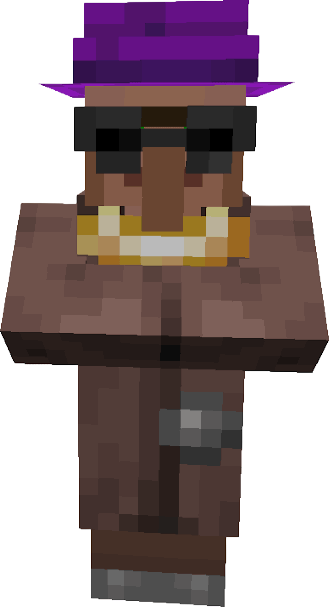

Hello again, this page is for showcasing my PNG file!
This was also something I tried using for my Minecraft server's website. It's a Minecraft villager and he looks like he's a DJ. I found this picture off of google images. It comes from this Minecraft mod: DJ Villager Minecraft Mod. I've never played with it before!

By clicking this link, you can visit the page where I'll show you my .jpeg file. Click this link!